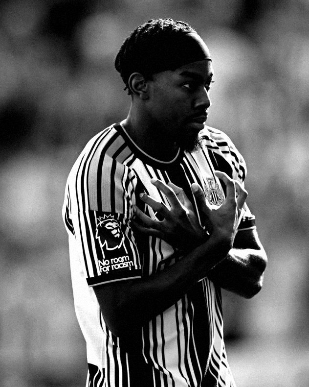
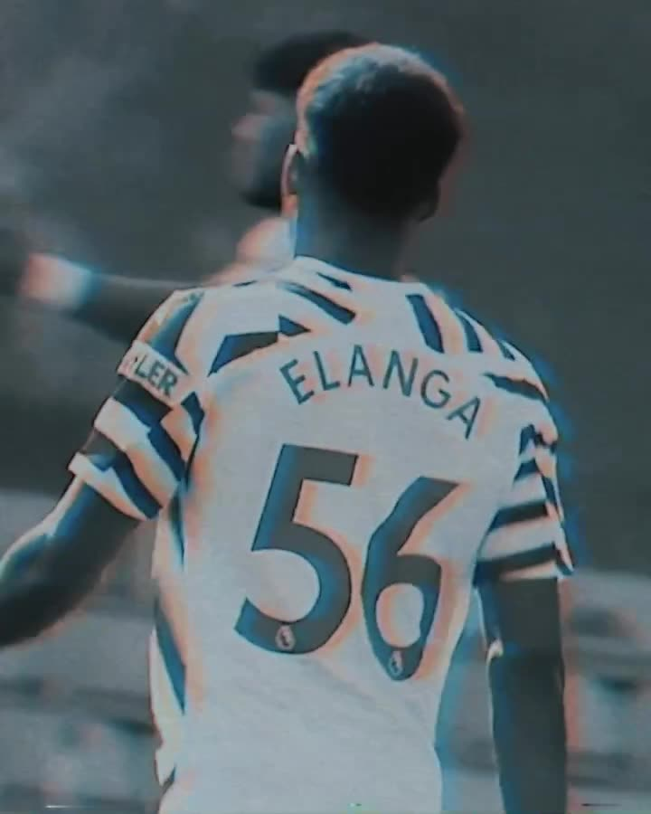
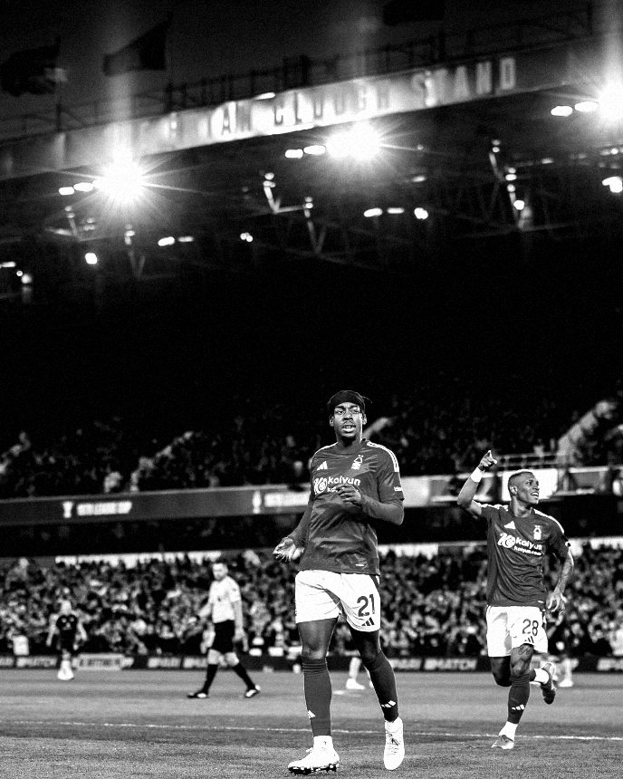
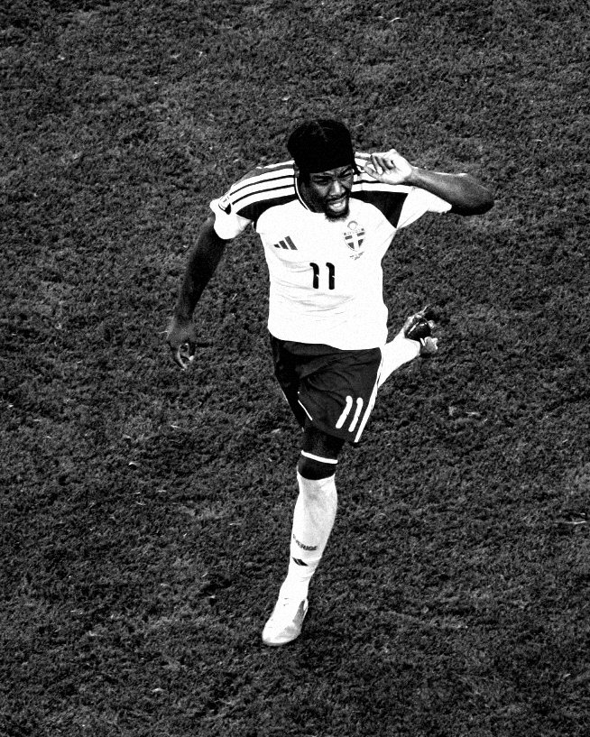

Attaquer l'espace
Sa vitesse est devenue une arme : attaquer la profondeur, multiplier les courses, peser sur chaque transition offensive.

Beyond speed.
Ailier international suédois, formé à Manchester United. Une trajectoire qui part de Malmö et mène aux plus grandes scènes d'Europe.

Philosophie
Sa vitesse lui a ouvert des portes. Le travail les a gardées ouvertes : des séances de musculation à l'aube avant les déplacements européens, des choix de carrière assumés, des saisons à se reconstruire. L'ambition, chez lui, se mesure à ce qu'il refuse de laisser stagner.

The Motion
Trois qualités qui reviennent à chaque étape de son parcours.
Sa vitesse est devenue une arme : attaquer la profondeur, multiplier les courses, peser sur chaque transition offensive.
Accélérer ne suffit pas. Il faut choisir la bonne passe au bon moment : c'est le palier qu'il a franchi à Nottingham Forest.
Le Metropolitano à 19 ans, le Camp Nou avec Newcastle, la Coupe du monde avec la Suède : des matchs où tout se décide en un instant.
The Journey
 2014 – 2023ManchesterL'académie, les débuts en Premier League, un but en Ligue des champions à 19 ans.
2014 – 2023ManchesterL'académie, les débuts en Premier League, un but en Ligue des champions à 19 ans.

2023 – 2025NottinghamDu temps de jeu, de la confiance, et Forest qui retrouve l'Europe. 2025 –NewcastleChanger de dimension et répondre présent lors des grandes soirées.
2025 –NewcastleChanger de dimension et répondre présent lors des grandes soirées.

2022 –SwedenLe choix de la Suède, jusqu'à la Coupe du monde 2026.The Person
Des racines, une façon de penser, un style et une ambition. L'homme derrière l'ailier. Lire The Person

Né à Malmö en 2002, fils de Joseph Elanga, ancien international camerounais. En héritage : le respect, le travail, l'humilité et la constance.
Ne pas rester prisonnier de ses erreurs, ni s'attarder sur ses réussites. Il lit et étudie les méthodes des meilleurs sportifs.
Direct, précis, sans effet inutile : une manière d'être qui ressemble à son jeu.
Gagner en régularité et franchir le cap qui sépare un bon joueur d'un joueur d'élite. À 24 ans, son histoire est encore en train de s'écrire.